An assembly language is a low-level programming language
designed for a specific type of processor.
A 32-bit processor on x86 architecture has 32-bit registers,
while 64-bit processors have 64-bit registers. Thus, x64 allows
the CPU to store more data and access it faster. The register
width also determines the amount of memory a computer can
utilize
x86-64 is also known as x64 and AMD64.
Functions return values in rax. How you pass parameters into functions varies depending on the platform:
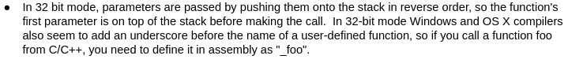
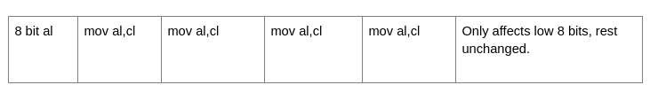
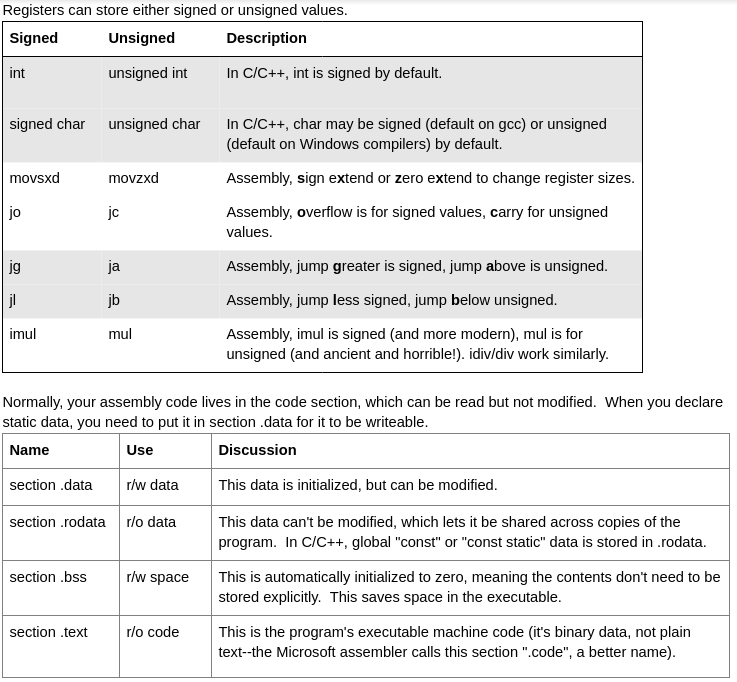
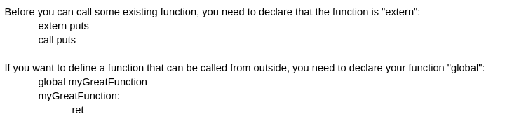
When linking a program that calls functions directly like this, you may need gcc's "-no-pie" option, to disable the position-independent executable support.
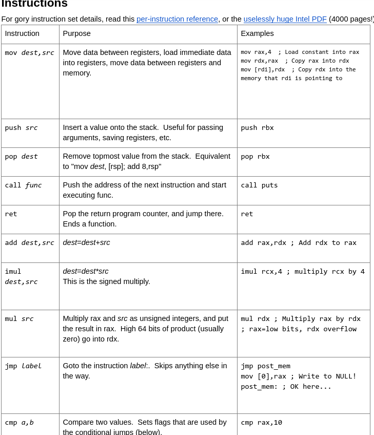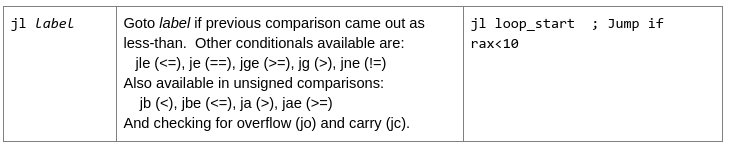
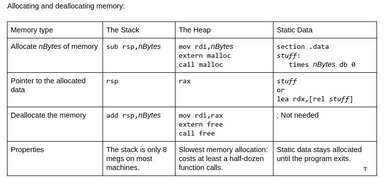
SSE Floating Point Instructions
There are at least three generations of x86 floating point instructions:
fldpi, the original "floating point register stack", mostly limited to 32-bit machines now.
addss xmm0,xmm2 the SSE instructions
vmovss xmm0,xmm1,xmm2 the VEX-coded instructions
The SSE registers are named "xmm0" through "xmm15".
The SSE instructions can be coded as shown below, or with a "v" in front for the VEX-coded
AVX version, which allows the use of the 32-byte AVX "ymm" registers, and three-operand
(destination, source1, source2) instruction format.
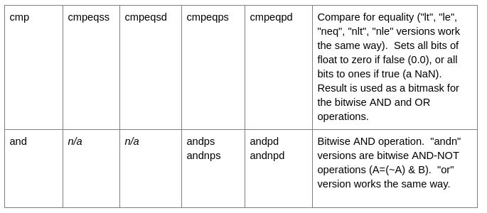
The algebra of bitwise operators:
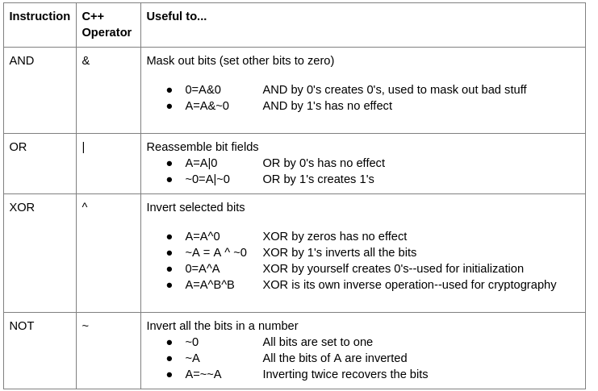Weird Instructions
x86 is ancient, and it has many weird old instructions. The more useful ones include:
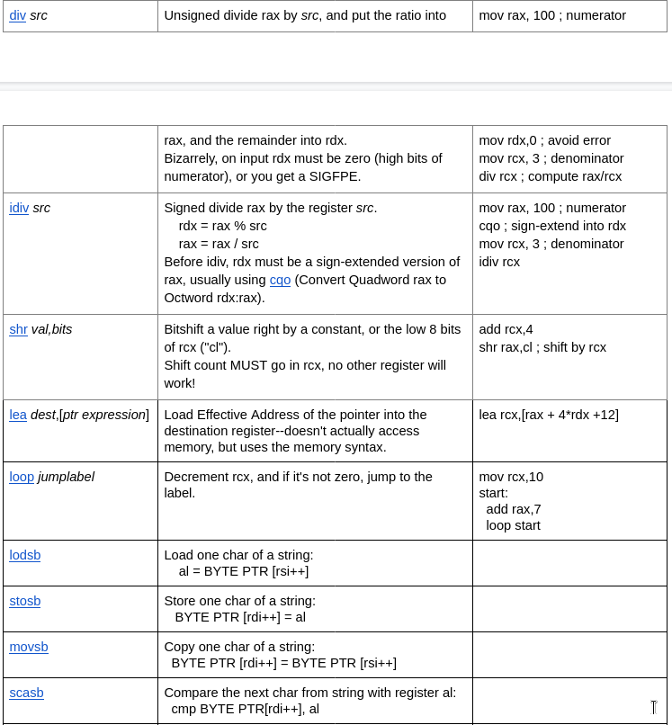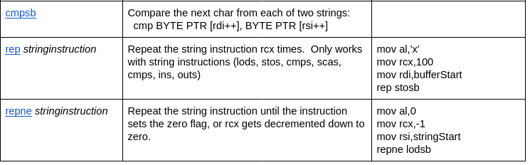
Debugging Assembly
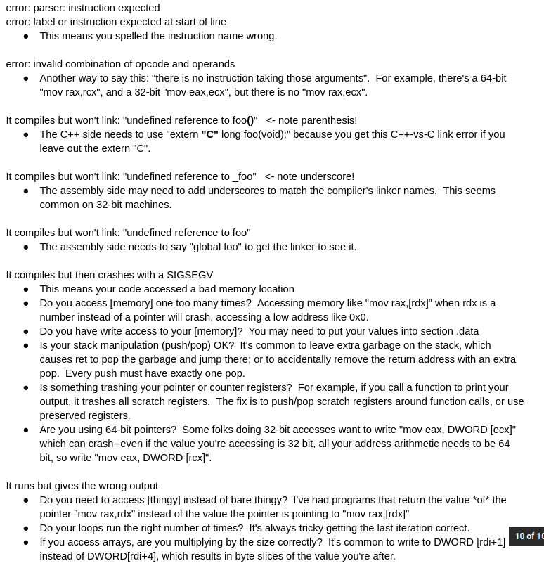